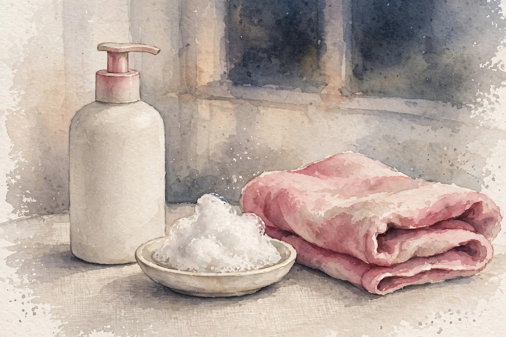
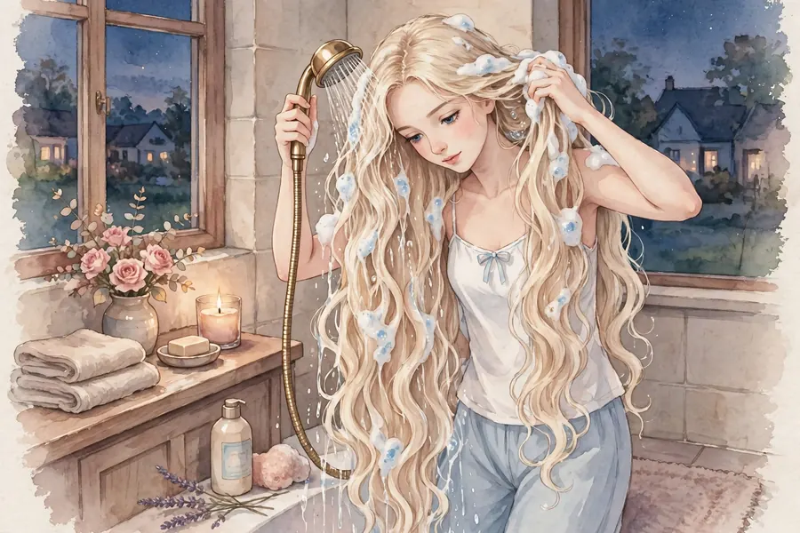

スタイリング剤を付けた日の洗い方

ワックスやスプレーをしっかり付けた日は、夜の洗髪の手順を少し変える必要があります。施術の現場でも、整髪料の日の洗い方についての質問は多いです。この記事では、普段の洗髪との違いを整理します。
予洗いを長く取るのが第一歩
整髪料を付けた日は、予洗いの役割が大きくなります。お湯で髪全体をしっかり濡らし、指で髪をほぐしながら水を通す時間を、いつもより長めに取ります。整髪料の種類によっては水である程度ゆるむものもあり、予洗いの段階で、後のシャンプーが行き渡りやすくなります。
乾いた髪をブラッシングしてから予洗いに入るのも、手順のひとつです。表面の整髪料がほぐれ、もつれも取れてから濡らすと、全体の流れがスムーズになります。ブラッシングは毛先から、という基本はここでも同じです。
シャンプーは「2回に分ける」選択肢
整髪料の量が多い日は、シャンプーを1回で済ませようとせず、2回に分ける考え方があります。1回目は整髪料を落とすことが中心で、泡立ちは控えめでも構いません。2回目はいつもの洗い方で、頭皮と髪全体を洗います。1回の量を増やすより、少量ずつ2回の方が、すすぎの確認もしやすくなります。
ただし、毎日2回洗う必要はありません。整髪料の量と、その日の汗のかき方で判断するものです。洗い分けの考え方は、別記事「1日に2回洗う日の量と間隔の考え方」とも通じます。
すすぎは「耳の後ろ」と「襟足」を入念に
整髪料とシャンプーの両方が残りやすいのが、耳の後ろと襟足です。すすぎの最後に、この2か所を指で触って確認する習慣をつけてください。残り感の確かめ方は、別記事「シャンプーのすすぎ：回数と残り感の確認」で詳しく紹介しています。
しっかり整髪料を付けた日ほど、夜の手順は丁寧に。これが翌朝の寝ぐせの軽さにもつながります。洗い残しがあると、朝の髪が重く感じられることがあるためです。夜のひと手間が、朝の段取りを助けてくれます。
スプレータイプを重ねて使った日は、表面が固まっていることがあります。その場合は、予洗いの前にブラッシングで表面をほぐし、お湯を長めに通してから洗い始めてください。いきなりシャンプーをつけても、固まった部分に泡が届きにくいことがあります。ほぐす、濡らす、洗う、の順番が大切です。
整髪料の日の洗髪では、トリートメントの量も見直しどころです。整髪料を落とすことに意識が向きますが、洗った後の毛先の感触も確かめてください。きしむ感じが強い日は、いつもの量を毛先中心に丁寧になじませます。落とす工程とつける工程の両方を、その日の状態に合わせて調整するのが、整髪料の日の考え方です。
整髪料の落としやすさは、種類によって違います。水で流れやすいもの、シャンプーでしっかり洗う必要があるもの。パッケージの使い方の欄に、洗い方の案内が書かれていることもあります。買うときに、つける場面だけでなく落とす場面の案内まで読んでおくと、その日の夜の手順が組み立てやすくなります。また、整髪料を落とした後の頭皮は、いつもより丁寧にすすぐ価値があります。耳の後ろ、襟足、生え際。この3点の確認を、その日の最後の手順として固定しておいてください。
整髪料の日の手順は、使う整髪料の量が多い日ほど丁寧に、少ない日は通常に、と強弱をつけて構いません。その日の付け方と夜の洗い方は、対になっているものです。
2回に分ける洗い方に慣れると、1回目の泡立ち具合で、その日の整髪料の残り具合が読めるようになります。泡の感じは、状態を知らせる合図です。感覚を記録しておくと、次回の量の調整にも役立ちます。

セラフィナ「整髪料の日は、予洗い長めと2回分け。すすぎは耳の後ろを忘れずにね」

セラフィナ｜美容の道具箱の案内役
「量と表示が分かれば、美容は失敗しない。」——セラフィナと白猫のモコが、買う前のチェックポイントを案内します。綺麗になりたい気持ちに正直に、でも表示は冷静に読むのが、このサイトの約束です。